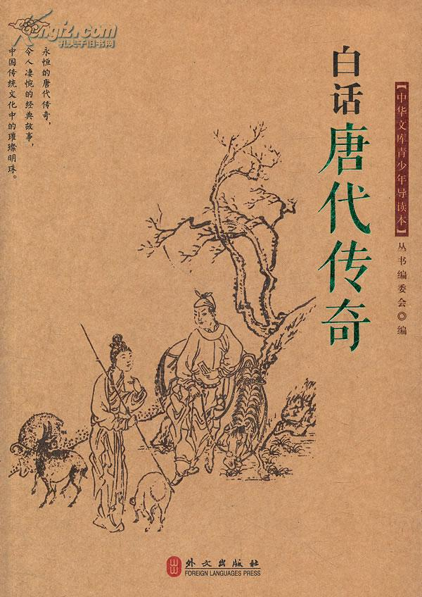

第十八回 妻子落风尘明偿积欠 兄弟争窈窕暗索前逋
第十八回 妻子落风尘明偿积欠 兄弟争窈窕暗索前逋#
 未央生得意之事按下慢表，再说他妻子玉香跟了权老实与丫鬟如意逃走，走到一处，忽然肚痛起来。她肚里的东西起先在家时节千方百计再打不下，如今走到路上受些辛苦，不觉就坠了下来。若早坠几日，岂不省了这番举动？如今逃走出来，回去不得，白白做了私奔之人，岂不是丈夫造下的冤孽带累她如此？
权老实的初意原为报仇，不是贪淫。自从拐出之後，就要卖她下水，只因有孕在身，踌躇未决。此时见她落下胎来，方才定了主意。就把主婢两个带入京师，寓在店中，寻人货卖。但凡卖良为娼，定要做个圈套，瞒了本妇，只说有亲眷在此，托他寻房居住，才好领人来看，看中了意，才好骗她入娼门。京师里面有个鸨母叫做“顾仙娘”，一见玉香就知道是桩奇货，照媒人所说的身价一天平对出来，连如意也买过去，依旧做了丫鬟服事她。
权老实卖过玉香之後，就有些过意不去，渐渐懊悔起来。心中想道，我闻得佛经上说，要知前世因今生受者，是要知后世因今生作者。是我自家妻子做了丑事，焉知不是我前世淫人妻之故？今世把妻子还人也不可知。我只该逆来顺受才是，为甚么又去淫人妻子，造起来世的孽障来？就是要报仇，既然与她睡过几夜，消了意恨也就罢了，为甚么又卖她为娼？又把她无事使女也卖下水去？权老实想到此处，不禁捶胸顿足，自家恨起自家来。想从前的事俱已做错，不可挽回，只有个忏悟今生，预修来世之法。就把卖人的银子，施舍与残疾穷苦之人，自己把头发剪去半截，做了个头陀，往各处去云游，要访真正高僧，求他剃度。后来游到括苍山中，遇着孤峰长老，知道是一尊活佛，就摩顶皈依了他，苦修二十年，成了正果。这是后话。
却说玉香堕落风尘，与如意两个走到顾先娘家，看一看动静，才晓得不是良家的光景。就是贞烈妇人跨进这重门槛也跑不出去，何况已经是失节之妇？玉香看了无可奈何，只得安心贴意，做起青楼女子的行径来。遂改名字叫□妙，取个表字，好待嫖客称呼。作者还叫他玉香，省得人看花了眼。
初到的一晚，就有个大财主来嫖。到第二日就要去，顾仙娘留他不住，他临去的时节吩咐顾仙娘道：“这位令爱容貌丰姿，件件都好，单少那三种绝计。你还应该传授她才是。我如今暂别，待你传授她会了再来请教。”说罢回去。他为甚么说出这话来？原来顾仙娘生平有三种绝技，都是妇人里面不曾讲究过的。她少年时节容貌也平常，竟享了三十余年的盛名。与她相处的都是乡绅大老，公子王孙，就到四五十岁的时节，还有富贵人去嫖她，就是为此三种绝技。第一种是俯阴就阳；第二种是耸阴接阳；第三种是舍阴助阳。她与男子干事，教男子仰面睡了，她爬上身去，把阳物插入阴中，立起来套一阵，坐下来揉一阵，又立起来套一阵。别的妇人弄了几下就腿酸脚软，动不得了。她一双膝弯竟像铁铸的一般，越弄越有力气。不但奉承男子，连自己也十分快活。这就叫做俯阴就阳，是她第一种绝技。她有时候睡在底下与男子干事，再不教男子一人着力，定要把自家身子耸动起来，男子抵一抵，她迎一迎；男子抽一抽，她让一让。不但替了男子一半气力，她自家也讨了一半便宜。若还女子不迎不送，只叫男人抽抵，何不把泥塑木雕的美人腰间控一个深孔，只要伸得阳物进去，就可以抽送得了，何须要与活人干事？所以做名妓的人要晓得这种道理，方才讨得男人欢心，图得自家快乐。这就叫做耸阴接阳，是她第二种绝技。至于舍阴助阳之法，一发玄妙，她与男子干事，再不肯使有限的阴精泄于无用之地，每丢一次，使男子受她一次之益。这是甚么样的法子？原来她与男子干事到将丢之际，就吩咐男子，教他把龟头抵住花心，不可再动；她又能使花心上小孔与龟头上小孔恰好相对，预先把吸精之法传授男子，到此时阴精一泄，就被男子吸进阳物之中，由尾闾而直上，径入丹田。这种东西的妙处，不但人参附子难与争功，就是长生不老的药，原不过如此。这种妙术是她十六岁上有个异人来嫖她，无意之中说出这道理，被她学过来，遇着有情的嫖客，就教如此如此，嫖客依她做来，无有不验。与她宿过几夜，不但精神倍加，连面上的颜色也光彩起来。人都说是仙女转世，所以教她做仙娘。这种道理既传与嫖客，那嫖客就该到自己家里去做，不须用着她了。要晓得吸精之法，虽然可传，那对着精孔之法，是传授不去的。要在干事的妇人善于凑合，这些关窍，只有她肚里明白，别的妇人那里凑合得来。妙在天下妇人皆迷，惟有她一人独悟，所以叫做绝技。
玉香初到底时节，那里晓得有这三种绝技，嫖客与她干事，见她第一种绝技尚然不会，那两种一发做不来了，就与她草草完事。睡到天明，见她美貌，舍她不得，可惜不谙此法，所以临行之际有这一番叮咛。仙娘送了嫖客出门，就骂她装娇作态，不曾奉承，把这大财主接得一夜就打发开去，以後怎么样赚钱，就要鞭打起来。玉香跪下再四哀求，仙娘方才饶了，就把这三种绝技，日夜与她讲究。自己同嫖客干事，就教她立再面前细看，会与不会，好当面指教她；她与嫖客干事，自己也坐在面前细看，是与不是，好当面提醒她。
俗语说得好，天下无难事，只怕有心人。玉香惧怕鸨母的法度，不敢不学，只消一两月工夫把三种绝技都学会了。又兼姿容秀美，笔墨精工，一时闻名动京师。没有一个乡绅大老公子王孙不来赏鉴。更有两个大老官极肯破钞，宿她一晚，定有一二十金相赠。你道这两个大老官是那个？原来就是瑞珠、瑞玉的丈夫，一个叫做卧云生，一个叫做倚云生。因在京里坐监，闻得玉香的盛名，兄弟两个争先拜访。起先是卧云生，瞒了阿弟先去嫖了几夜。后来是倚云生，瞒了阿兄也去嫖了几夜。一日兄弟两个盘问出来，遂索性把玉香包在家中，大家公用。不但兄弟同利，又且师弟同门，连香云的丈夫名为轩轩子，也时常点缀点缀。与她睡过一两夜，竟有些老当益壮起来。方才晓得玉香的阴物竟是一味补药，若取着这样妻子，竟不消躲避差徭了。
卧云生兄弟在监里坐了一年，偶然想起故乡，要回去看看妻子，就央一个人情，求大司成给假数月，大司成批了。师弟三人别了玉香一同回去。到了家中，少不得三位佳人替丈夫接风之後，就问一向在外嫖了几个女客。三位丈夫就把相处玉香的话陈说一遍，又把那三种绝技次第夸张出来。香云姊妹三个第二日起来各述所闻，都是一般诧事。瑞珠、瑞玉道：“我不信妇人之中竟有那样怪物。这等说起来，我们三个都是没用得了，这些话还是他们三个通同造出来，要激励我们用心干事的意思。”香云道：“这样事瞒不得我们相处的人，他生平见广识多，若有这一种妓妇，他毕竟晓得。等他进来，大家一问就是了。”瑞珠、瑞玉道：“也说得是。”
一日，遇着清明佳节，三个的丈夫一齐出去扫墓，要第二日回来。就叫丫鬟请未央生进去相会。一见了面，就把这疑事问他。未央生道：“天下的事奇奇怪怪，或者妓妇里面有这一种阴物也不可知。她既在京师，我终有一日遇着她，待我嫖她一夜，若对得我过的，方才是个真怪物。”四人说了一会，宿了一晚。未央生次日出来，心上想道，他们三个丈夫的话如出一口，可见这一桩事是真的了。当今之世有这样异人，何不去会她一会？况且我的精血被这四五个妇人也耗得多了，正要学个采战之法。滋补一滋补。那个妓者既有许多妙术，我只消嫖她一夜，把个吸精之法传授过来，就一生受用不尽了。主意定了，就要先回故乡看看妻子，然后进京去访那名妓。他这一去，有分教：
触翻东岳，泄不尽愤懑之胸；掬尽西江，洗不尽羞惭之色。
要知分解，就在下回。
评曰：
未央生之淫恶已造到极处，若使其妻子止于偷汉而不至于为娼，人犹不痛快。即使为娼，人心犹不痛快。即使为娼，止于接他客而不及香云姊妹之夫，人心犹不痛快。一部淫书看到头，无一人不报，稍有风流罪过之人，未有不通身汗下者，如此淫书不可不多读也！